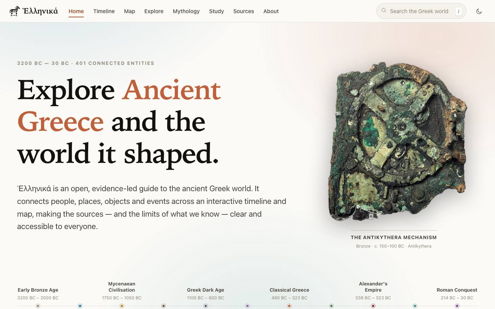
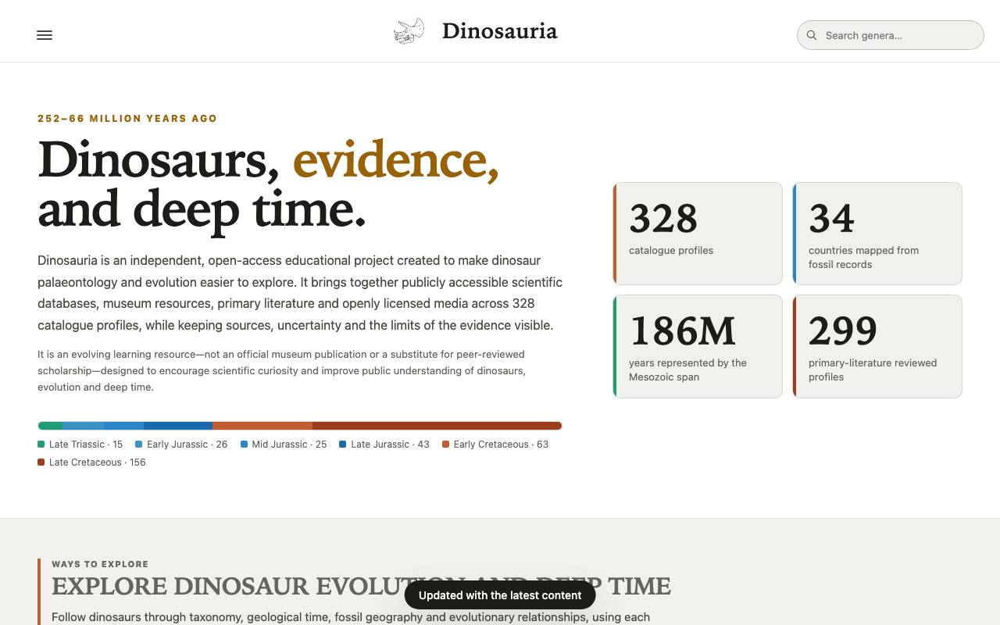
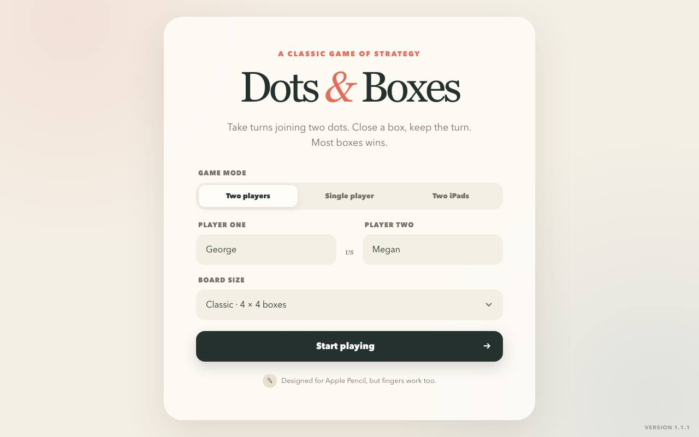
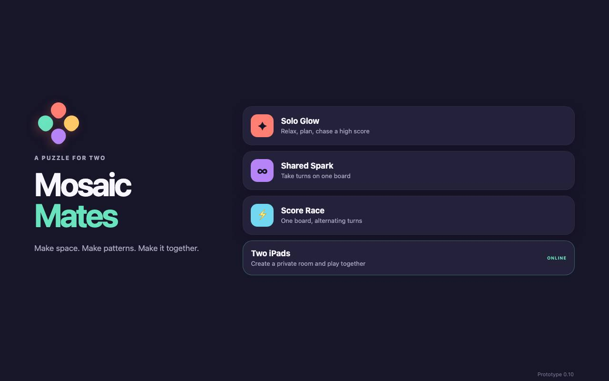

George Philippou
Reference sites, games, tools, websites and embedded firmware, made in collaboration with Claude. I set the direction, check the facts and test the results.
Carefully sourced material on the ancient world, deep time and engineering.


A 64-page illustrated booklet on the evidence for human evolution. Built with a Python and HTML pipeline, with an automatic layout checker and every new fact verified against DOIs.
Print project, not online.
A local-first teaching tool that links the maths, plots and physical intuition for signals and systems, with an accessible data table behind every plot.
In development.
Playable in the browser, and designed for iPad and Apple Pencil.


A 2D arcade game: dodge your enemies, collect your friends, and survive with three lives. Has a two-player mode, custom character art and a quip for every pickup.
Private for now, since it uses friends' likenesses.
Apps built to solve a real problem for me and the people around me.
Real sites for a local business, with no build step and free hosting.
Embedded C for wearable electrochemical and multi-sensor devices.
Firmware that runs seven sensors at once (optical, heart, motion, CO₂, temperature, particulates and electrochemical) and logs CRC-protected, timestamped data to microSD, then reads it back to verify.
Research code, private.
Voltammetry firmware for a wearable potentiostat. Includes a live UART plotter and a hardware debugging investigation that traced a 0.22 V peak shift to a constant DAC offset, rather than iR drop.
Research code, private.